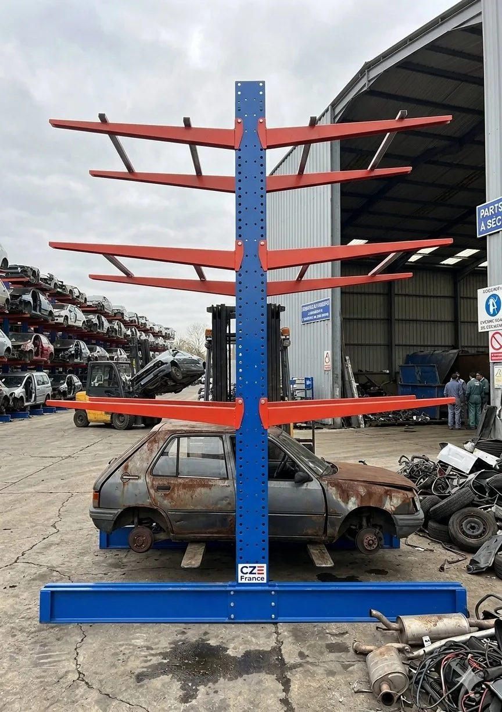

Nos racks cantilever sont disponibles en deux configurations, ainsi qu'en fabrication sur-mesure pour s'adapter à vos espaces. Possibilité de 4 étages ou plus, livrés partout en France.

Vous avez besoin de stocker des objets lourds et encombrants — véhicules, poutres, tuyaux, panneaux ou plaques — mais vous manquez d'espace ? Le rayonnage cantilever est la solution idéale : il exploite toute la hauteur disponible pour multiplier votre capacité de stockage sans agrandir votre parc.
Choisissez le simple pour un stockage adossé, ou le double pour exploiter les deux faces. Besoin spécifique ? Nous fabriquons à vos dimensions.

Tarif dégressif selon la quantité — estimez votre configuration en ligne.
Des remises automatiques s'appliquent selon la quantité de cantilevers commandés — idéal pour les groupes et les réseaux multi-sites.
Composez votre solution de stockage en quelques clics et obtenez une estimation immédiate. Notre bureau d'études valide ensuite la configuration exacte pour votre site.
Remises automatiques : −10 % dès 40 pièces, −15 % dès 80, −20 % au-delà de 120. Estimation indicative — le devis définitif (niveaux additionnels, livraison) est confirmé par notre équipe.
Les rayonnages cantilever sont des étagères industrielles conçues pour stocker des objets lourds et encombrants de manière efficace et sécurisée. Ils sont composés de poutres horizontales appelées « bras », fixées à des supports verticaux. Les objets à stocker reposent sur ces bras, ce qui permet un accès facile à chacun d'entre eux. Les bras peuvent être ajustés en hauteur pour s'adapter à différentes tailles de charges.
Le cantilever CX est livré en kit et entièrement boulonné : aucune soudure n'est nécessaire. L'assemblage suit quelques étapes simples, détaillées dans la notice de montage :
La notice complète détaille chaque étape, les couples de serrage et la position des contreventements selon la hauteur choisie.
Télécharger la notice de montage (PDF)


Les rayonnages cantilever sont particulièrement utiles pour les centres VHU, casses auto, fourrières, garages, concessions et entrepôts. Ils permettent de stocker en hauteur véhicules et pièces détachées encombrantes, en toute sécurité, et de réorganiser entièrement un parc sur une surface réduite.
Nos cantilevers standard mesurent 4,50 m de hauteur. La profondeur est de 2,20 m pour le modèle simple et de 3,90 m pour le modèle double. Des hauteurs et configurations sur-mesure sont possibles.
Le cantilever permet de stocker sur 4 étages et plus. Le nombre de véhicules dépend de la configuration (simple ou double) et du nombre de niveaux choisis ; notre bureau d'études dimensionne la solution selon votre parc.
Oui. Au-delà des modèles simple et double, nous fabriquons des cantilevers adaptés à vos dimensions et contraintes d'espace. Décrivez votre besoin via le configurateur ou la page contact.
Oui, nous livrons vos cantilevers directement sur votre site par transporteur spécialisé, partout en France. Les articles en stock sont expédiés sous 24 h ; les fabrications sur commande sous 30 jours.
Oui, un tarif dégressif s'applique selon la quantité commandée : −10 % dès 40 pièces, −15 % dès 80 pièces et −20 % au-delà de 120 pièces. Utilisez le configurateur pour estimer votre commande.


Configurez votre solution ou décrivez-nous votre besoin : notre équipe vous répond avec un devis détaillé, adapté à votre site.
Demander un devisTransformez vos câbles en cuivre pur revendable à 99,99 % de pureté.
Découvrir DémantèlementDécoupez nettement acier, pots catalytiques et traverses.
Découvrir Sur-mesureComposez votre cantilever et obtenez une estimation en direct.
Découvrir